逻辑积木
我们来介绍逻辑相关的积木：
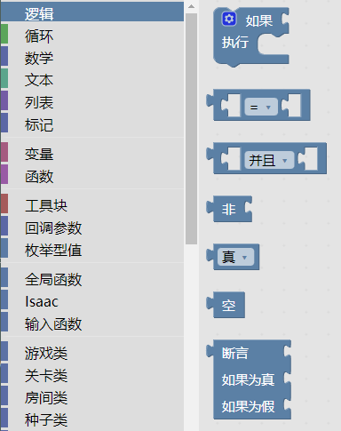
逻辑型
逻辑型只有两个值：真和假。
如果积木
如果积木右侧有两个凹槽，第一个凹槽多数情况下放置的是逻辑型的值，如果是真，就会执行执行里面的积木。不论真假，都会继续执行下面的积木。
例如，下面的程序表示，如果角色是满红心的，就播放开心动画。不论角色是否满红心，都增加一颗炸弹：
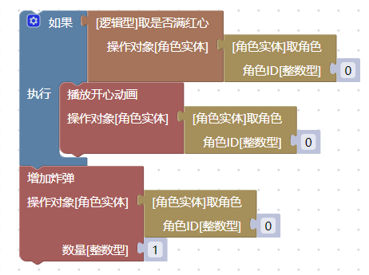
如果积木还可以设置其它的形式。点击左上角的设置按钮，你可以设置多个条件和逻辑：
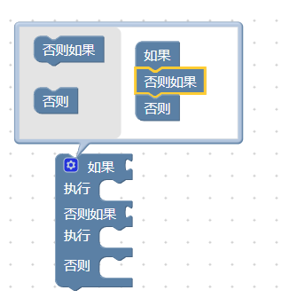
比如我们给前面的逻辑增加一个悲伤动画。如果角色满红心，就播放开心动画，否则播放悲伤动画。不论是否满红心，都增加一颗炸弹：
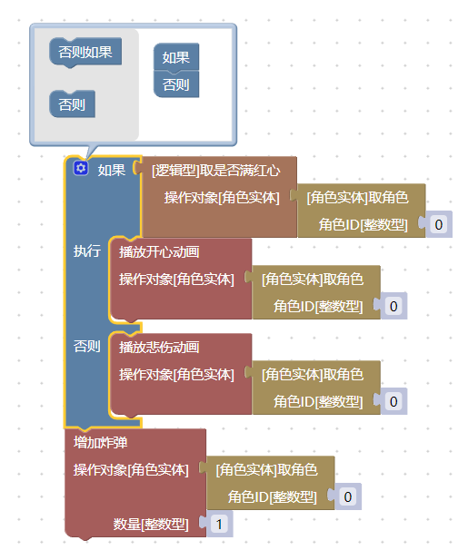
比较积木
比较积木可以比较两个数字，得到的是逻辑型：
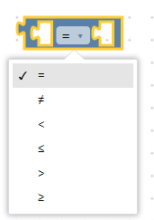
比如，下面的指令实现，当角色的炸弹数量大于5，就播放开心动画：
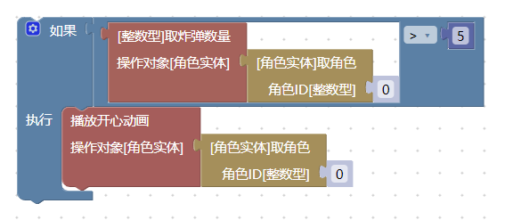
逻辑运算积木
逻辑运算积木的两个输入通常是逻辑型。
并且表示左右同时为真，才能得到真。或表示左右有一个为真，就能得到真。
例如，下面的程序需要炸弹数量和金币数量都大于5，才会播放开心动画：
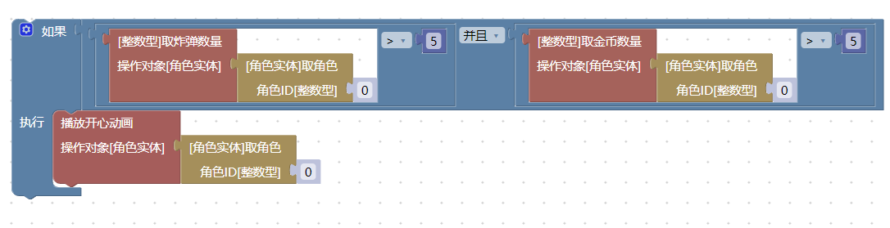
而下面的程序只要有任意一个大于5，就会播放开心动画：
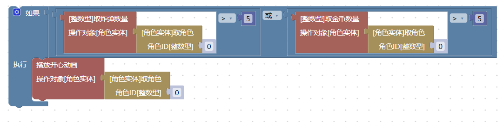
非积木
非翻转一个逻辑值，非真为假，非假为真。
例如，如果不满红心，就播放悲伤动画：
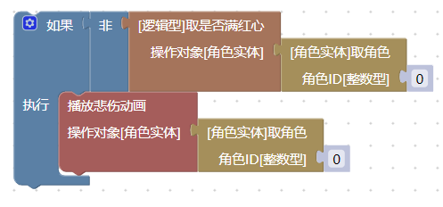
真假积木
这个积木直接产生一个真或者假:
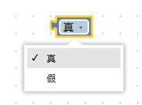
例如，这里一定会执行播放悲伤动画：
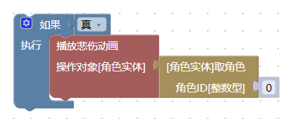
再比如，移除道具的积木中，使用它来表示是否连带套装效果一起移除（此处为影子积木，因此可以替换为其它逻辑）：
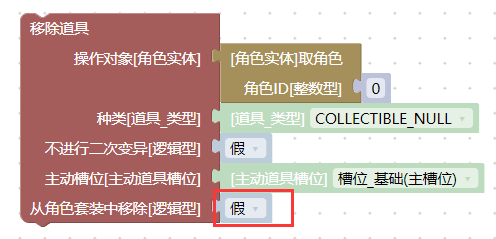
空值积木
它产生一个空值，空值在特定的逻辑中被用到，详见类型系统#空值
断言积木
断言积木接受三个参数，第一个参数一般是逻辑型。第一个参数为真的时候，它输出第二个参数，否则输出第三个参数。
例如，下面的程序实现，如果角色满红心，就增加单位为4的黑心（2颗），否则增加单位为1的黑心（半颗）：
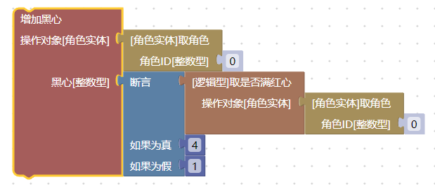